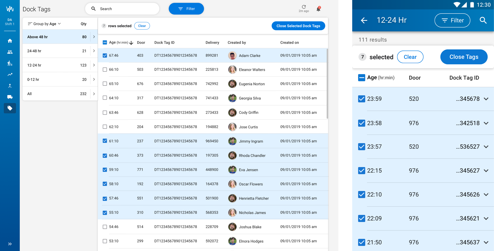

Requests from Receiving Managers at Walmart Warehouses
I uncovered gaps between the feature requested and the real user need through user interviews and contextual inquiries. I proposed a new scenario to the product manager and development teams to solve user pain points. I led the feature design on desktop and mobile, conducting AB testing with targeted user groups. I also created mockup and shared with users to gain leadership support, when dev team pushed back.
3 receiving managers at Texas, 4 area managers at Arkansas gave very positive feedback to this feature design, calling it as exactly what they need. The solution won leadership support to change backend structure completly, making Pulse the first app that solves a related user pain point. The design pattern influenced several other applications.
This design allows receiving managers to track dock tags in real time and close dock tags with only one click. This make a previously tedious, sometimes even impossible process, very easy to conduct. It fastens delivery finalization, which allows a DC to pay bills to vendors.
Receiving managers are provided with a real time overview through a data vis card. Managers can glance at it, know dock tag progress by age and decide their next actions.
Managers can sort dock tags by creators. They can quickly identify who needs help based on dock tag quantity. This allows managers make a direct impact to the building by teaching the best practice to assocaites.
If freights were shipped out of the building, managers can select tags and manually close them. They no longer need to leave these tags aging until expiration, which can be a blocker to delivery finalization.
Low-Fi and Mid-Fi
We want 0 dock tags in our distribution Centers.
We like the view by associates, can we view by deliveries as well?
from Receiving Managers
Our backend will only allow us to show one docktag for one search. We cannot show all the tags in a table as we don’t have this data service. We have to rewrite the data structure to allow this view.
from Pulse Dev Team
High-Fi
Our leadership will give extra timeline to change the backend data struture.
from Product Manager
This is very useful. We don't have any other questions. But when will this version launch?
from Receiving Managers
We are asked to track dock tags in GDM as well, could we schedule time to learn from your research findings?
from Designers at GDM platform
Step 1
I spent 2 hours with 3 Receiving Managers at RDC 6094 at Bentonville, researching in depth for why they monitor dock tags, how they analyze data and what the pain points are. This research allowed me to uncover a new user pain point, in addition to what was required.
Step 2
I conducted a user testing session and invited my PM to the meeting. This allowed us to find what worked and what could be improved from users’ perspective. My product manager loved the feedback and started to prioritize the value of user testing.
Step 3
I received pushbacks from backend teams and data providers. They told us the proposed scenario required a huge data structure change and cannot be done within the timeline. I communicated the value of the new design in several meetings.
Step 4
A user complaint email won leadership’s support for us, confirming we were doing the right thing. I worked overtime that day in order to prepare a demo with this user. The demo went very well and leadership decided to give our dev team extra bandwith to restructure the backend data.
Step 5
Pulse becomes the first application in Walmart that allows managers to track and close multiple dock tags at one time. It helps receiving managers track dock tags and finalize orders more efficiently. This design pattern has influenced several other applications, including GDM and Receiving Station.
lunaatlgt@gmail.com
(404)476-1819